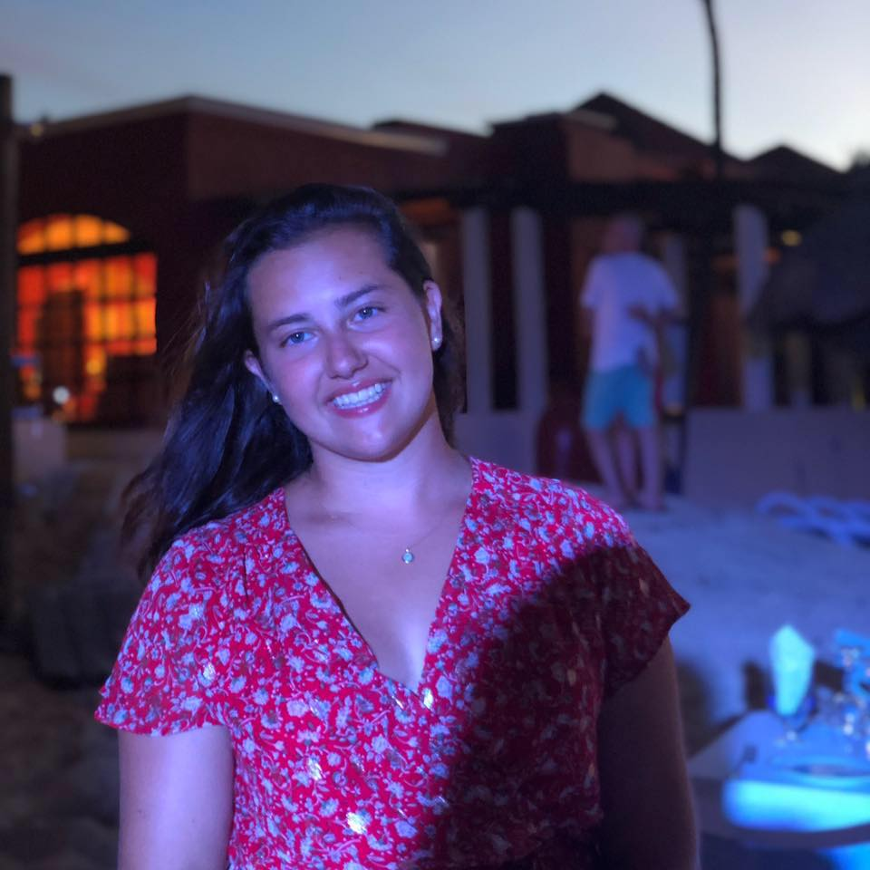
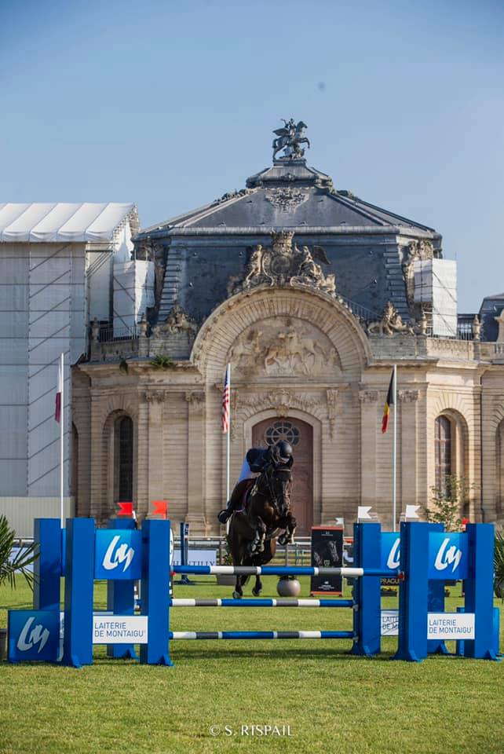

Hello, I am Anne Vetriak. Welcome on my profile.

I am 18 years old. I come from Chantilly, a small town near Paris, and I study at ESSEC Business School in English track. I am also class representative of my section this year.
Check our Entrepreneurship website to know more about our group project:
My Hobbies
🐴 Horse Riding 🐴
I am passionate about horse riding. 🐎 I started riding when I was 2 years old and I have been competing in showjumping since I was 10. I have two horses: Feliciano and Charisma. I ride almost every day before or after class and I regularly go in competition during the weekend, while studying at ESSEC. 
📖 Reading 📖
Since I learned how to read, I always enjoyed literature. In high school, I was in the British International Section and it thus allowed me to study British Literature in addition to French Literature that we study in French class. I enjoy reading authors such as Camus, Hugo, Maupassant, Éluard, as well as Wilde.
✈️ Traveling ✈️
I love traveling and discovering new cultures, new places and meeting people. 🌄
My Studies at ESSEC Business School

It is the end of my first year at ESSEC and I learned many things thanks to the different courses. The BBA allowed me to study:
- Micro and Macroeconomics
- Mathematics
- Geopolitics
- Law
- Foreign languages such as Spanish and German
I am now discovering programming thanks to